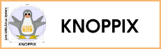

Linux for Intermediate Users
These distros are slightly more difficult to use, or are used for specific purposes.
Live CDs
Live CDs will allow you to boot your PC into Linux without making any permanent changes. As soon as you take the CD out of the CDROM your PC returns to its Windows mundaneness. A system booted from CD will contain a full office suite and many other tools. I always carry a Knoppix CD with me in case I need to diagnose a foreign system.
|  |